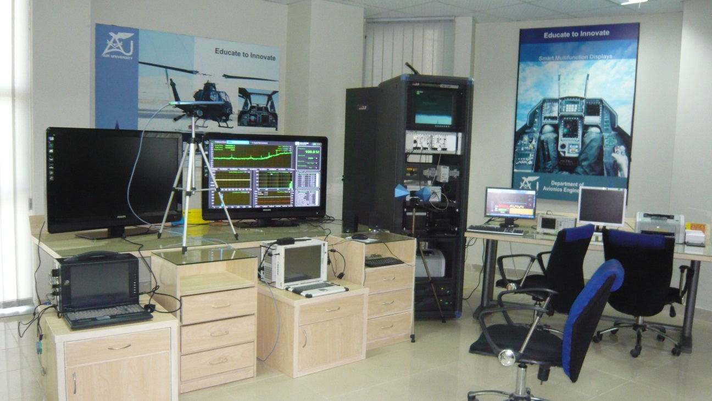
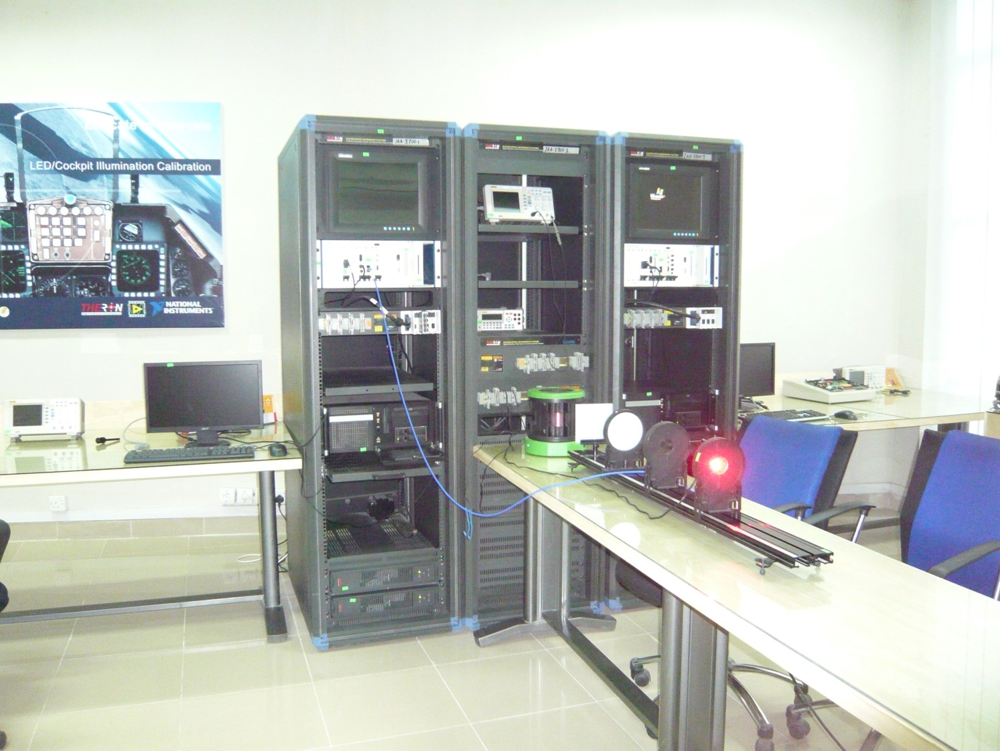
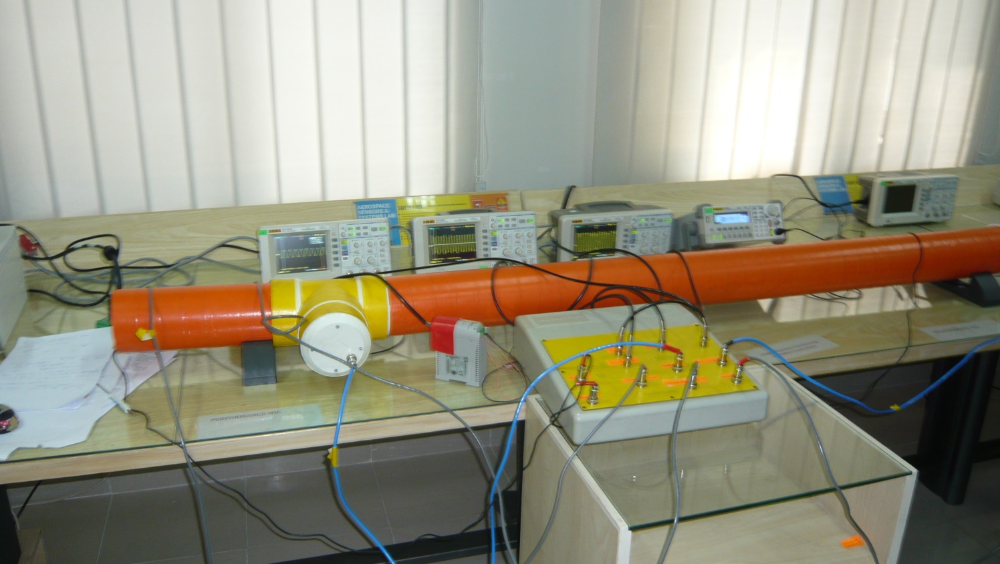
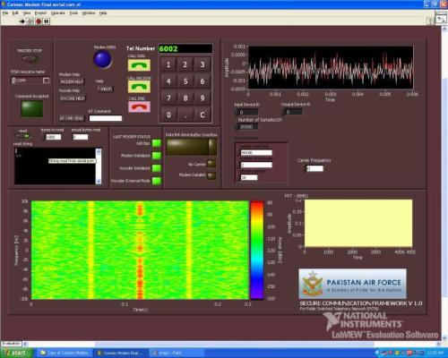
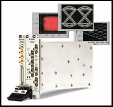

Research Laboratories
1. Avionics Integration Lab
The aim of this lab is to provide state-of-the art hybrid avionics equipment integration and systems development platform supporting multiple busses, multiple platforms and unified operations. Demonstration of implementing multiple gateways will be possible through most modern reconfigurable and programmable H/W. This complete instrumentation ready lab will be the key strength of avionics integration research facilities at IAA. It is bifurcated into two parts. The avionics Integration test-bed which aims at the integration of one specific aircraft and the research test-bed which aims at providing a toolset for simulating the environment for any research purpose in the area of avionics integration and aerospace sensors & systems simulation.
The instrumentation platform chosen for these test beds is PXI for seamless integration of signal conditioning, data acquisition and switching mechanisms. AIL's main strength is that the addition of cards can help the instrumentation equipment to morph into the desired research test bed for avionics integration. All will be equipped to support research in the following areas:
Real-time fault tolerant Protocols design, implementation and analysis
Aerospace Sensor and Systems Research
Distributed Controls Systems Design and Evaluation Platforms
Embedded Systems Design and Implementation
Reconfigurable Hardware Applications
ASIC Design Testing and Validation
FPGA Algorithms Optimization and Basic Support Facility for ASIC Design
Instrumentation and Measurement
Design Validations Facilities
Automated Test Equipment
Production Validation and Quality Assurance

2. Electro Optics Lab
This lab aims at providing the-state-of-the-art thermal imaging, optical and image processing and tracking , multiple sensors fusion FLIR/CCD, robust image registration techniques, optical measurement and testing using spectrometry, fiber optic sensors calibration, linearization and testing facility. Also included in the scope of this lab are fault diagnostics using multiple vision sensors, laser applications, light source, monochrome and color LEDs testing. EOL will be equipped to support research in the following areas:
Image Processing and Image Based Tracking Control
Multiple Sensors Fusion FLIR/CCD
Robust Image Restoration Techniques
Optical Measurement and Testing Using Spectrometry
Fiber Optic Sensors Calibration, Linearization and Testing Facility
Fault Diagnostics Using Multiple Vision Sensors
Lasers Target Designation and Ranging and Precise Motion Measurement

3. Aerospace Sensors & Systems Lab
Aerospace sensors lab aims at providing the research facility for advanced topics in aerospace sensors such as sensors modeling, linearization, sensor failure detection, complimentary filtering, and multiple sensor fusion. This lab will use a modular test and measurement system platform extended in SCXI signal conditioning interfaces that allow programmable filtering and signal conditioning of sensors signal as well as sensor activation. This lab when used in conjunction with avionics system integration will become a unique aircraft instrumentation and avionics integration test-bed for research purposes. ASSL will be equipped to support research in the following areas:
Aerospace Sensors and Systems Research
Vibrations
Adaptive Control
Aerospace Vehicle Autopilot Design
Fault Tolerant and Robust Controls
Optimization and H-infinity Controls
Fault Detection and Isolation
Sensors and System Identification
Data Fusion
Neuro-Fuzzy Techniques in Instrumentation and Measurement

4. Communication Security & Embedded Systems Lab
This state-of-the-art lab can support research and development in Voice Encryption / Decryption, IP Exchanges., E1 / T1 Interfaces, E1 Analysis, VPN Implementations, IP Terminal Development, FPGA and DSP implementation of algorithms.

5. ECM & Radar Lab
The aim of this lab is provide complete test facility in the range of the software defined radios, frequency hopping radios and systems, wireless adhoc networks, HF, UHF, VHF spectrum monitoring and selective jamming including the concepts of OFDM implementation and testing services. ERL will be equipped to support research in the following areas:
Software Defined Radios
Hopping Radios Analysis and Testing
Jammer Design, Self-Protection Jammer, Friend Aware Jamming
Wireless Adhoc Networks
WiMAX and Emerging Standards Analysis in Commercial Range
HF/UHF/VHF Spectrum Monitoring and Selective Jamming
Orthogonal Frequency Division Multiplexing (OFDM)

6. Micro Electro-Mechanical Systems Lab
Micro-Electro-Mechanical-Systems (MEMS) is an emerging technology that has found abundant use in aerospace systems. Miniaturized sensors on silicon chips have replaced bulky sensors saving volume, weight and power all of which are at a premium in aerospace vehicles. The lab adds a highly sought-after dimension to the in-country indigenous capabilities in the area of MEMS. At present it has facilities for characterization of MEMS devices but work is in hand to expand the available facilities to fabrication of micro and nano sensors and devices for aerospace as well as electronics, automotive and medical applications etc.